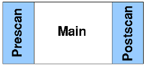

A scan description is a complete description of a measurement process. It defines which devices will be involved and how they behave.
Within a scan description multiple scans are possible. Each of them is represented by a chain. A chain is a composition of appended and nested scan modules (arranged as a tree) preceded by an Event. The following figure shows a graphical representation of a scan description as it would appear in the editor.
This scan description example only has one chain started by S-0 (the Start Event) followed by a scan module „SM 1” which has one appended („SM 2 appended”) and one nested („SM 3 nested”) scan module.
Scan modules are self-contained units which are partitioned into three stages, a prescan phase, a main phase and a postscan phase:

An appended scan module is executed after the preceding module is completed.
A nested scan module is processed at each motor position of its parent scan module. If multiple axes are moved the positions of the axis defined as „main axis” are used.
Consider that a scan modules prescan and postscan phases are only processed once (not at each iteration of the nested module(s)).